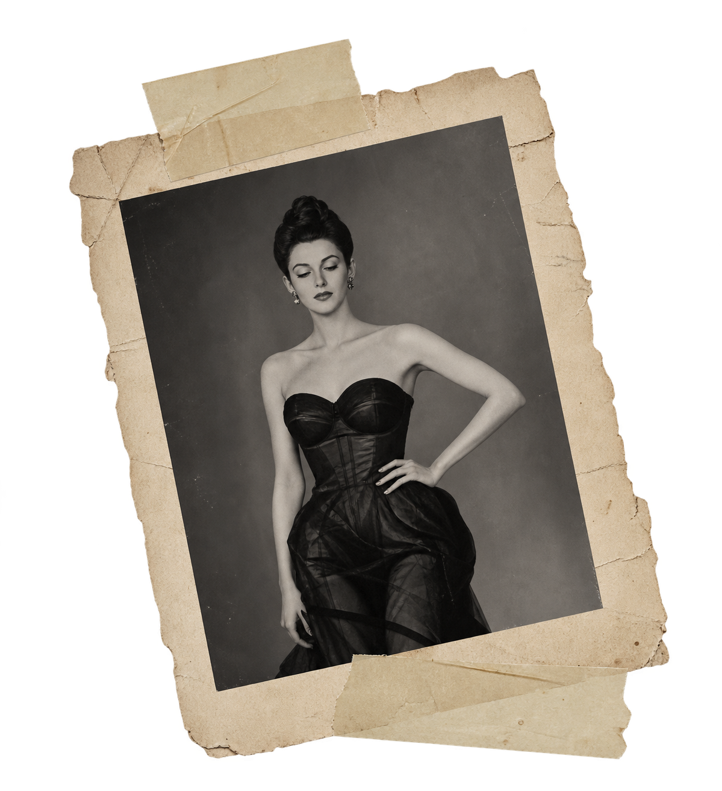

ARCHIVE INDEX
01 OBJECT
02 FORM
03 MEMORY
04 CULTURE
01
P. 001
keep this
worth remembering

✳
✦
✧
✦
＊
✦
✦
✧
✦
✧
The Archive
A personal collection of fashion’s unforgettable objects.
001
Maison Margiela
Tabi Boot
1989
AN OBJECT
THAT BECAME A
LANGUAGE.
Maison
Martin
Margiela
What began as a radical split-toe silhouette became one of
fashion's most recognizable objects. I love the Tabi because
its identity does not depend on a visible logo. The shape
itself became the house code.
FORM ·
IDENTITY ·
ANTI-LUXURY
002
Christian Dior by John Galliano
The Saddle Bag
SS00
Few accessories demonstrate the power of silhouette as clearly
as the Saddle. Its asymmetric form turned a handbag into a visual
code — recognizable before the Dior name is even read.
Silhouette · Recognition · Collectibility
003
Thierry Mugler
La Chimère
Haute Couture · FW97–98
What fascinates me about the Chimère gown is that its fantasy
cannot be separated from the extraordinary work required to
construct it. It represents fashion at the point where clothing
begins to behave like sculpture.
Craftsmanship · Fantasy · Transformation
004
Alexander McQueen
Armadillo Boot
Plato's Atlantis · SS10
The Armadillo boot pushes the accessory almost beyond
wearability. Its exaggerated structure changes the body,
the walk and the silhouette itself.
Sculpture · Body · Spectacle
005
Comme des Garçons
Body Meets Dress,
Dress Meets Body
Rei Kawakubo · SS97
Padding appeared in places fashion traditionally tries to
flatten, narrow or conceal. The collection challenged the
conventional silhouette and asked where the body ended and
the garment began.
Body · Proportion · Provocation
006
Elsa Schiaparelli × Salvador Dalí
Lobster Dress
1937
Schiaparelli understood that fashion could participate in the
same visual conversation as art. The lobster turns an elegant
evening dress into something strange, humorous and deliberately
provocative.
Surrealism · Collaboration · Provocation
007
Hermès
Himalaya Birkin
Collectible Luxury
The Himalaya Birkin interests me because it demonstrates how
a luxury object acquires mythology. Material rarity,
craftsmanship, restricted availability and auction culture
accumulate around the bag until the object becomes a collectible.
Scarcity · Mythology · Value
008
Guy Bourdin
The Image Before the Product
French Fashion Photography · 1970s
Before I understood fashion photography as an industry,
I understood the feeling of it: impossible colour, strange
framing and images in which the product could become almost
secondary to the world around it.
Photography · Desire · Narrative
009
Cartier
Tutti Frutti
Art Deco · India → Paris
I keep coming back to Tutti Frutti because it rejects the
idea that sophistication must always mean restraint. Carved
coloured stones and dense ornament become harmonious through
craftsmanship.
Jewelry · Colour · Craftsmanship
001 — ∞
The archive is
never finished.
These objects do not form a complete history of fashion.
They form a personal one — pieces, images and ideas I return
to because each changed the language around it.